Set up Wayward the first time
Walkthrough
When you first open Wayward, setup helps you make a few choices and shows you the gestures you'll use most. It takes a minute or two. To keep the defaults, tap Next on each page. You can change your choices later in Settings.
Wayward needs Android 10 or later.
If you first open Wayward by tapping a link in another app, Wayward opens that page immediately and postpones setup until the next time you open it.
Getting around the setup
- Next takes you to the next page. On the last page it says Done.
- Swipe sideways to go back and forth, or use your phone's Back.
- Skip, at the top, ends the setup and leaves everything as it is now.
- The dots at the bottom show how far along you are.
- Back on the first page closes Wayward. The setup shows again next time.
1. Welcome to Wayward
The first page holds the choices most people care about:
- Search engine: what your searches from the address bar use. DuckDuckGo is the default, and Brave, Startpage, Ecosia, Google and Bing are in the list.
- Address bar: At the bottom, nearest your thumb, or At the top. The buttons stay at the bottom either way.
- Full screen pages (Android 11 and later): pages fill the whole screen, and the bars slide away while you scroll.
- Ad blocking: how much Wayward blocks. Standard blocks ads, trackers, malware and cookie notices, and breaks the fewest sites. Strict also blocks phishing, "open in app" banners and social widgets. Maximum also hides pop-ups, chat, newsletter and notification prompts, and more sites can break.
- Ad and tracker counter: your start page shows how many ads and trackers Wayward blocked this week. (When you run the setup again in the Minimal look, this switch isn't here: that look has its own, Ad blocking, in Settings > Customize.)
- Private by default: links from other apps, and the tab Wayward starts with, open as private tabs. Private tabs are locked by default, so with this setting on, Wayward asks for your fingerprint, face or PIN as it starts.
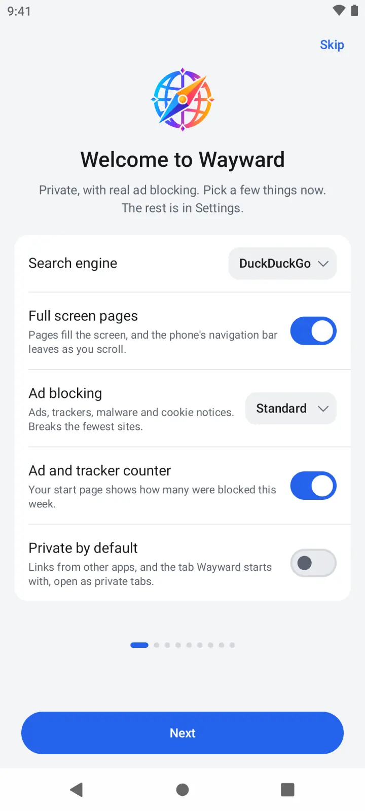
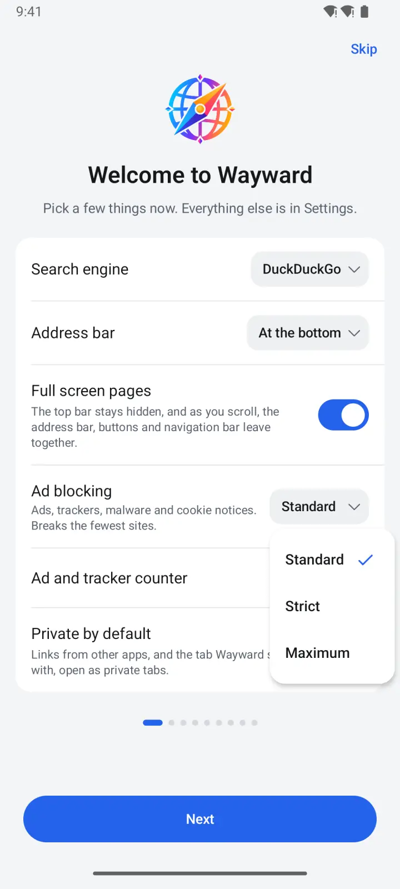
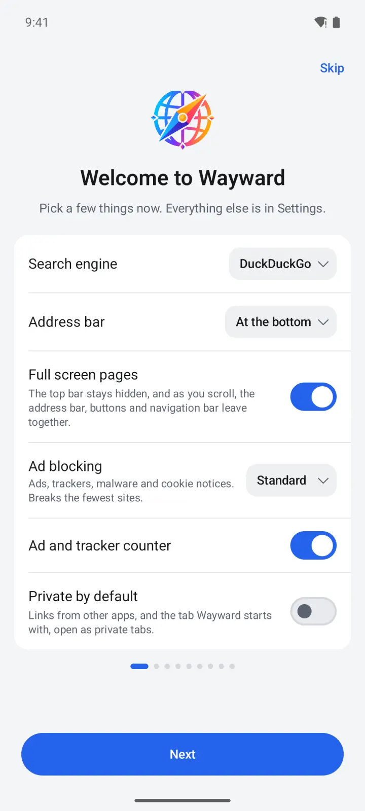
2. Make it yours
Pick a look. The whole setup switches to it as you tap, so you see it immediately.
- Normal has the two-row bar: the address on top, a row of buttons under it.
- Minimal is quieter: neutral greys and plain buttons, and the Minimalist Address Bar, one floating pill with the address, Shields, Tabs and the menu. See Use the Minimalist Address Bar.
Under the two drawings, Theme sets Match phone, Light or Dark.
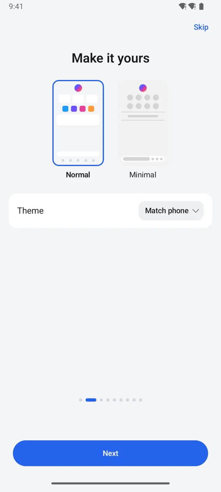
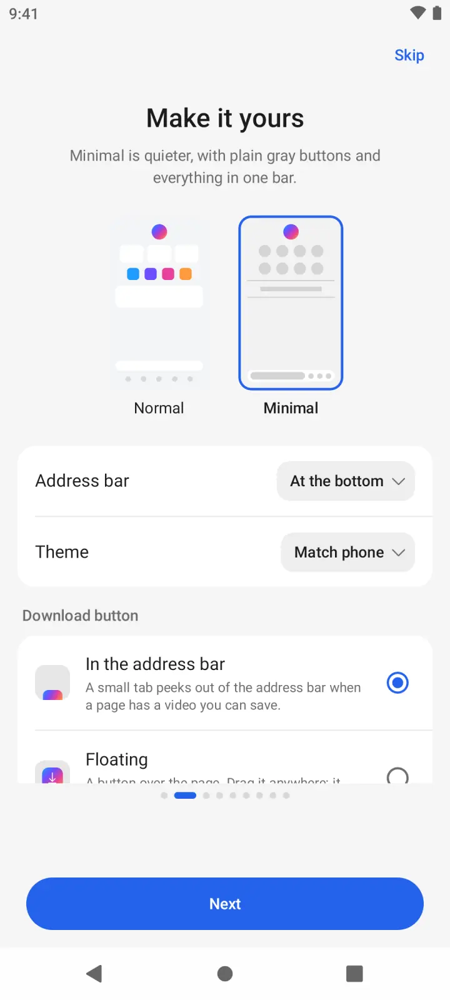
3. Four gestures
Four short pages each show one gesture as a little looping animation:
- Tap the address bar to search, type an address, or scan a QR code.
- Hold a link or picture to open it in a new or private tab, copy it, share it or download it.
- Your tabs and spaces: on the Tabs screen, hold a space to edit or lock it. Hold a tab to pin it, rename it or pick several, and swipe a tab sideways to close it.
- Pull down to reload: at the top of a page, pull it down and let go. Scrolling down a page hides the bars, and scrolling up brings them back.
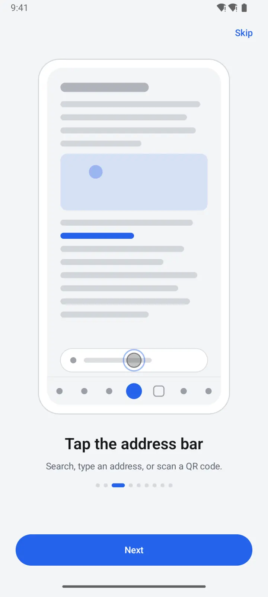
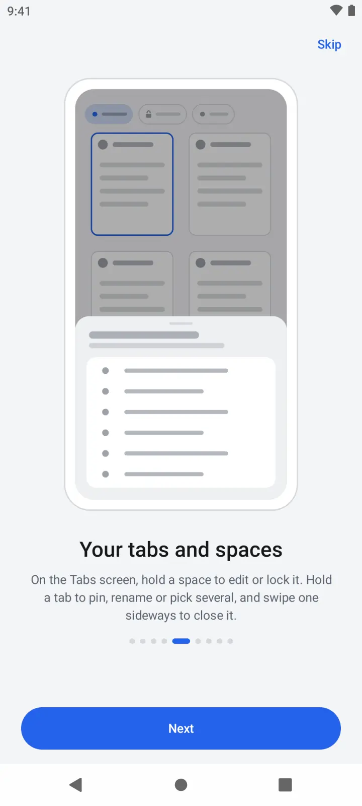
4. Bring your things
This page is for anyone coming from another browser, or putting Wayward back on a phone. All of it is optional.
- Import bookmarks: pick a bookmarks file another browser saved. They land in a folder of their own in Bookmarks.
- Restore a backup: pick a Wayward settings file you saved before. Wayward lists what will change and asks first. It replaces what you picked on the earlier pages.
- Downloads go to: Private, in app keeps downloads private, behind your lock. A folder on your phone saves them where your gallery and other apps can see them. Wayward explains that and asks first, then opens Android's folder picker.
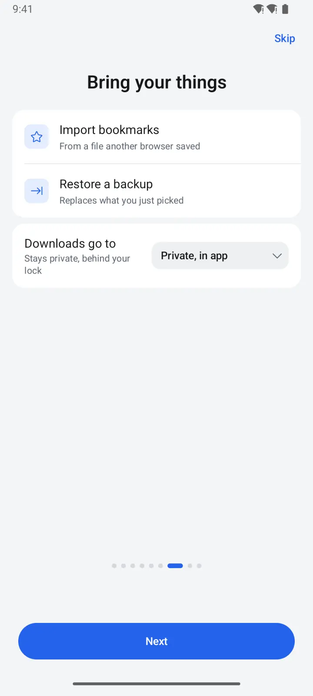
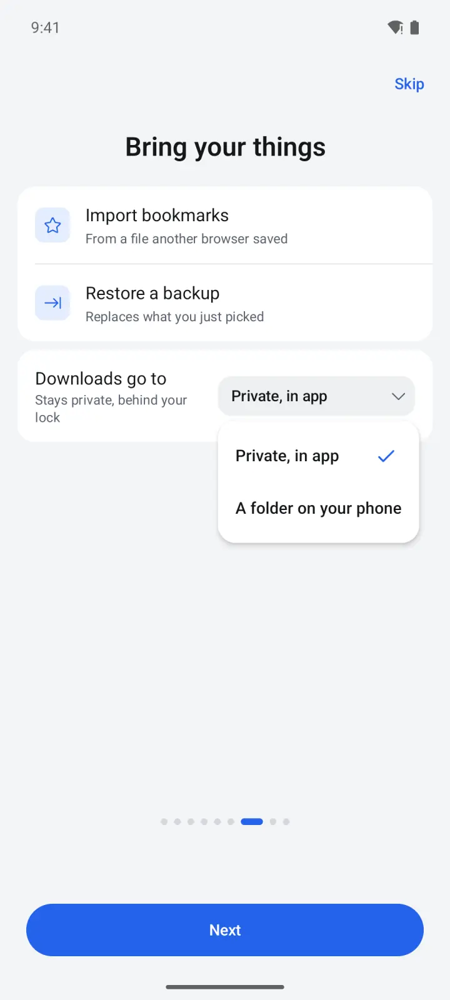
More in Bring your bookmarks and settings.
5. Make Wayward your browser
This page only shows while Wayward isn't your phone's default browser. Set as default brings up Android's own question, and Not now skips it. Either way, the setup moves on. More in Make Wayward your default browser.
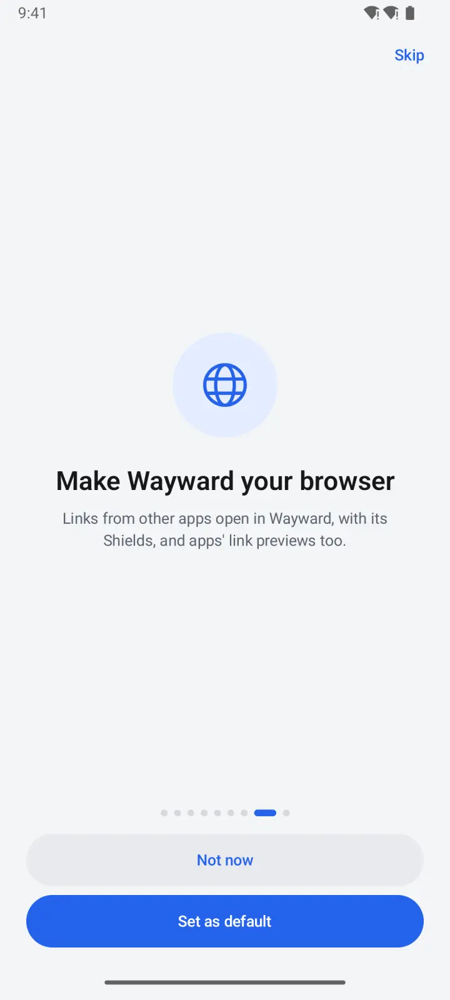
6. Want an AI assistant?
The last page asks about the assistant. It can answer questions about the page you're on, sum it up, or browse for you, with your own key from an AI provider. Without Premium, the page says It's part of Premium.
- Yes, set it up ends the setup on the assistant's settings, ready for your key. See Set up the assistant with your own key.
- No thanks takes the assistant off the bar and asks what goes in its place. Pick your middle button shows the bar as it will look, with eight choices: New tab, New private tab, Find in page, Share, Back, Forward, Bookmarks and History. Tap one, then Done. Your pick sits in the gradient circle in the middle of the bar, where the assistant was.
- With the Minimalist Address Bar there's no middle button, so No thanks just takes the assistant away.
- Skip leaves the bar as it is, assistant included.
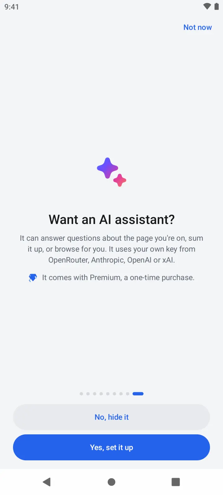
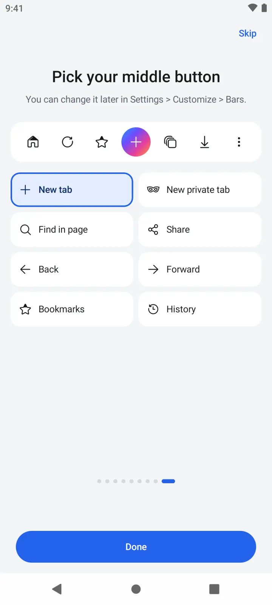
Changed your mind? Settings > Customize > Middle button > AI assistant brings the assistant back.
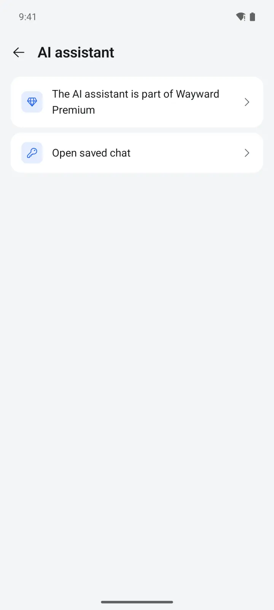
The end
The setup fades into the globe and Welcome to Wayward, then into your start page (or the assistant's settings, if you said yes). A tap or Back skips ahead.
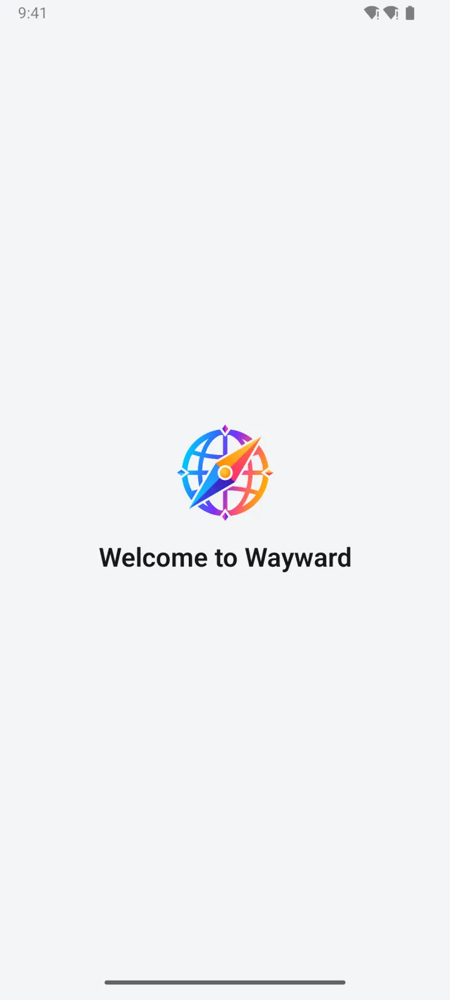
Run the setup again
Want the tour again, or to go through the choices once more? Open the ⋮ menu, then Settings > Welcome setup. Pick one, then tap Continue:
- Just the tutorial: only the four gesture pages, then you're back in Settings.
- The whole setup: every page again, each choice showing what you have now. It ends in the browser, on the tab you were on.
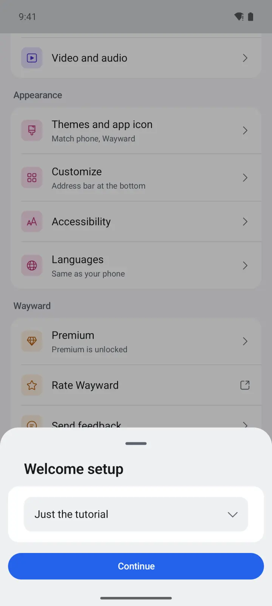
After an update that brings the setup back, like 1.5.0, Wayward opens on the whole setup once, the same way. Your tabs, settings and downloads stay as they were, and Skip or Done takes you to them.